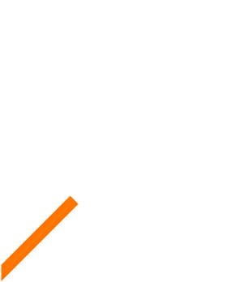
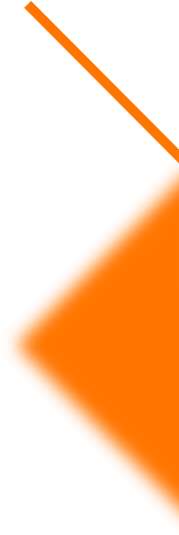

Perfil Profesional.
Cuento con preparación en áreas como imagen corporativa (creación o rediseño de marca, incluyendo toda su estrategia visual y corporativa); diseño web (Diseño y maquetación de páginas web, empleando photoshop, Illustrator, html, css y javascript). marketing (desarrollo creativo de estrategias publicitarias); medios editoriales e impresos (producción de revistas, periódicos, catálogos entre otros) y fotografía (trabajos de campo para producir imágenes propias para la compañía). Lógicamente para llevar a cabo las anteriores labores, se requiere de conocimientos de herramientas de diseño, por ello me desempeño en el manejo de programas de diseño tales como Photoshop, Illustrator, InDesign, DreamWeaver, y programas libres como CorelDraw y editor de código Brackets.
Más personal.
Soy Omar López, tengo 27 años y soy egresado de la UNIBAC (Institución Universitaria Bellas Artes y Ciencias de Bolívar). Actualmente vivo en Barranquilla atlántico, y me encuentro laborando en una empresa dedicada al expendio de variados productos, tales como papelería, suministros para oficinas, juguetería, entre otros. Es la quinta empresa que me brinda la oportunidad de adquirir nuevas experiencias en el amplio campo del diseño gráfico. Mi principal pasatiempo es ilustrar ya sea en papel o digitalmente, me gusta trabajar en equipo, trato de apoyar en todo lo que puedo e intento ser una persona altruista.
Experiencia e historia.
2 0 1 3
Finalizando los últimos periodos de estudio en UNIBAC (Institución Universitaria Bellas Artes y Ciencias de Bolívar), se me solicita ejecutar prácticas comerciales en la Fundación Universitaria Tecnológico Comfenalco, justo allí inicio mi camino en el campo laboral para adquirir experiencia. Me encontraba laborando como diseñador de material gráfico e informativo, pero direccionado a circulación netamente institucional.
PROYECTO DESTACADO/ Revista para padres de los estudiantes.
A finales del 2013, justamente al final de mis prácticas comerciales, fui recomendado para laborar en una agencia de viajes, bajo el cargo de auxiliar de publicidad. Mis funciones eran muy variables, tales como diseño editorial y coordinación de impresión de estos y demás enseres. Uno de los proyectos más destacados fue la diagramación de dos catálogos de programas de viajes turísticos y un tarifario de precios hoteleros, estos debían ser impresos en cantidades dadas y circular en tres idiomas, español, portugués e inglés.
2 0 1 5
Finalizando mi segundo año de labor, en el año 2015, colaboré en dos proyectos importantes; el primero trataba sobre el mantenimiento de la nueva página web de la marca. Utilizando la plataforma Wordpress, se insertaba o extraía contenido del sitio web, tales como banners web o información relevante, y el diseño de marca de un nuevo servicio de esta. El segundo proyecto fue la creación de un manual de imagen corporativa, que estandarizara y regulara los elementos gráficos representativos de la marca. Ya que la marca carecía de unidad visual tanto en su estructura como en sus campañas publicitarias. Cabe afirmar que este fue mi propuesta de proyecto de graduación en la universidad.
PPROYECTO DESTACADO/ Manual de imagen corporativa.
Recibí una propuesta laboral en una empresa, dedicada al expendio de computadores y otros artículos electrónicos relacionados. Me encontraba bajo el cargo de director del departamento de marketing. Donde me encargaba de todo lo relacionado con publicidad de la marca. Mis funciones principales basaban en la elaboración de campañas publicitarias de acuerdo a las temporadas, como por ejemplo, amor y amistad y/o halloween. Dichas campañas, debían circular, en redes sociales, página web y correos masivos. Por ello era mi deber, elaborar las piezas gráficas correspondientes y encargarme de gestionar la circulación de estas en los diferentes medios de publicación. Mi estadía fue de dos meses en esta empresa, pero fue suficiente para empezar a interesarme más en redes sociales y diseño de páginas web.
PROYECTO DESTACADO/ Mails masivos y redes sociales.

2 0 1 6
Después de medio año sabático, para el año 2016, recibo una propuesta laboral en una agencia de publicidad digital y desarrolladora de sofware. Estuve con ellos dos años de labor. Mis principales trataban sobre: Diseño de piezas gráficas para las distintas redes sociales de los clientes, apoyo en la creación de estrategias de campañas publicitarias y maquetación de páginas web desde su previo diseño en photoshop e illustrator, hasta su codificación en editores de texto como Brackets o Dreamweaver. Podría decirse que los proyectos más destacados fueron dos; El primero es el diseño de un sitio web llamado www.kokoscocina.com. Se solicitó elaborar un diseño limpio, sencillo y funcional para el sitio web de este cliente, con el fin de complementar las campañas publicitarias de sus redes sociales. El segundo fue la creación de unas ilustraciones con temática de carnaval, para ser añadidas a la estrategia de marketing de dos clientes del área hotelera.
PROYECTO DESTACADO/ Pagina web www.kokoscocina.com
2 0 1 8
En el año 2018, me mudé a la ciudad de Barranquilla, postulé e ingresé a RGS Global Marketing Group, empresa dedicada al desarrollo y ejecución de estrategias de marketing. Estuve con ellos durante tres meses. Mis labores consistían en: Diseño de piezas gráficas para las distintas necesidades de los clientes, mockup y diseño 3D para pre-visualizar el comportamiento de marca y espacios para eventos. Por último, la creación de informes multimedia, donde el cliente, por medio de un video informativo, podía revisar los detalles más relevantes acerca de la ejecución su evento o cualquier otra actividad.
PROYECTO DESTACADO/ Pre-producción y producción de material gráfico para la marca FINSOCIAL.

HABILIDADES
Programas privados.
Desempeño en el manejo de programas privados cómo Dreamweaver, Photoshop, Illustrator, InDesign.
Programas libres.
Desempeño en el manejo de programas libres como el editor de texto Brackets para la programación de sitios web, y CorelDraw para diseño en general.
Imagen corporativa.
Habilidades en la creación o rediseño de marcas, incluyendo la definición de valores corporativos y aplicando el correcto uso en las campañas publicitarias, para el coherente comportamiento de los mismos. Adicionalmente, desempeño en la creación, rediseño u organización de todo lo que incluye la identidad visual de una marca, como lo es (manual corporativo, papelería, membrecía, diapositivas de presentación, flyers, carteles, folletos, carpetas, entre otros).
Marketing.
Desempeño en el desarrollo creativo de ideas para proponer estrategias publicitarias, basado en aspectos básicos como la segmentación de público objetivo, entre otros.
Medios editoriales.
Habilidades pera la diagramación de medios editoriales e impresos, como lo son (revistas, periódicos, catálogos, libros, cartillas, entre otros).
Fotografía.
Trabajos de campo para producir productos visuales originales para la compañía.
ilustración.
Ilustración a mano alzada, empleando herramientas como tablas digitalizadoras, con el fin de generar propuestas visuales en base al dibujo.
Sistemas operativos.
Experiencia y buen manejo en el uso de sistemas operativos tales como Windows o Mac OS.
Diseño de sitios web (Responsive).
Diseño de páginas web adaptativas a todo tamaño de pantalla, tales como computadores, tablets y smartphones.